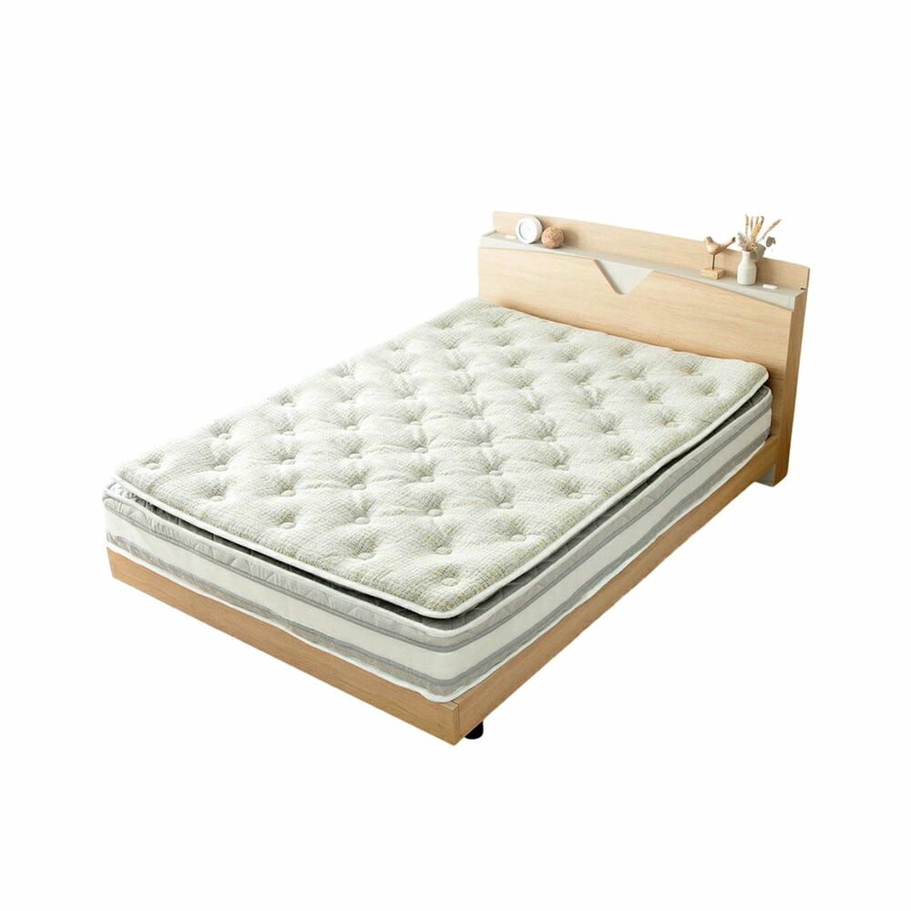

咲夜レアルフィット（源ベッド）を公式情報で解説｜厚さ26cm・コイル465個の日本製ポケットコイル
咲夜レアルフィットは、寝具メーカー源ベッドの日本製ポケットコイルマットレスです。最大の特徴は厚さ26cm。一般的なベッドマットレスと比べても厚い部類で、シングル49,990円（税込）という価格とのバランスが評価の軸になります。このページでは、2026年11月25日に公式サイトで確認した仕様・価格・保証をもとに、向いている人と注意点を整理します。
- 厚さ26cmのポケットコイルを5万円前後で探す人の第一候補
- 寝心地はフィット・ジャスト・キープの3種から選べて、価格はどれも同じ
- お試し制度はないため、寝心地の違いを購入前に確認することが大切
こんにちは、ネムリです。咲夜レアルフィットを公式情報で解説します。厚さ26cmと、寝心地を3種から選べる点が特徴です。
基本情報
| 項目 | 内容（公式確認・2026年11月25日） |
|---|---|
| 製品名 | 咲夜レアルフィット（源ベッド） |
| 構造 | ポケットコイル（6.7インチ） |
| 寝心地 | フィット／ジャスト（平行配列）・キープ（交互配列）の3種 |
| コイル数（シングル） | フィット・ジャスト465個／キープ504個 |
| サイズ（シングル） | 97×195×26cm |
| 重量（シングル） | フィット27kg／ジャスト29kg／キープ34kg |
| 価格（シングル・通常生地） | 49,990円（税込） |
| 生産 | 日本製 |
| 仕様 | 両面仕様・圧縮梱包 |
| 保証 | 5年保証（公式商品ページ表記） |
| お試し制度 | なし |
| 公式サイト | 咲夜レアルフィットの公式サイトを見る |

選び方の基準に照らすと
マットレス選びの一般的な基準は、硬さ・厚さ・素材の3点です。硬さはN値（ニュートン）の目安が公開されている商品なら体重と照らして選べます。厚さは本体として使うなら10cm以上が一つの目安で、素材はポケットコイル（点で支える）とウレタン（面で支える）で寝心地の方向が変わります。この商品は厚さ26cmのポケットコイルで、硬さはN値ではなく寝心地3種の説明から選ぶ形です。4商品の公式仕様を同じ物差しで並べた公式仕様の照合表も参考にしてください。
ポイントは、寝心地をフィット・ジャスト・キープの3種から選べることです。お試し制度はないので、選び方は慎重に。
寝心地3種の違い
咲夜レアルフィットは、コイルの配列が違う3種類の寝心地から選べます。フィットとジャストはコイルを平行に並べた配列、キープは交互配列です。価格は3種類とも同じなので、選ぶ基準は「価格」ではなく「寝心地の好みと体格」になります。体重の目安がN値（ニュートン）のような数値で公開されているモットンと違い、咲夜レアルフィットは寝心地の説明から選ぶ形です。硬めが好きな人はキープ、標準的な支えが欲しい人はフィットやジャストから検討すると考えやすいでしょう。
両面仕様なので、定期的に上下・表裏を入れ替えるローテーションができます。公式では3か月に1度程度のローテーションが案内されており、へたりを均等にしやすい使い方です。
良い点と気になる点
良い点：厚さ26cmはこの価格帯では厚く、底つき感の心配が少ない設計です。コイル数・サイズ・重量といった仕様が数字で公開されているため、買う前に比較しやすいのも利点です。圧縮梱包で届くため、玄関や廊下が狭い住まいでも搬入の見通しが立てやすくなります。
気になる点：お試し制度がないため、寝心地が合わなかった場合の返品はできません（不良品を除く）。また、シングルでも27〜34kgと重さがあるため、ローテーションや立てかけの作業は一人だと負担になる場合があります。設置場所までの動線と、扱える重さかどうかを先に確認してください。
こんな人におすすめ
- 厚さのあるポケットコイルを5万円前後で探している人
- 日本製のマットレスを選びたい人
- 寝心地を複数から選んで買いたい人
- 搬入経路が狭く、圧縮梱包のほうが安心な人
よくある質問
- Q. 寝心地の3種類で価格は変わりますか？
- 変わりません。フィット・ジャスト・キープのどれを選んでも、シングルは49,990円（税込・通常生地）です（2026年11月25日公式確認）。
- Q. 床に直接置いて使えますか？
- 厚さ26cmで底つき感は出にくい設計ですが、どのマットレスも床への直置きは湿気がこもりやすくなります。すのこベッドや除湿シートの併用、定期的な立てかけをおすすめします。
- Q. 試しに寝てから買うことはできますか？
- 咲夜レアルフィットにお試し制度はありません。自宅で試してから決めたい場合は、120日間のトライアルがあるNELLやリムネ リッチコイルも候補になります。
まとめ
咲夜レアルフィットは、「厚さ26cmの日本製ポケットコイルを5万円前後で」という探し方に合うマットレスです。寝心地を3種から選べる点と、仕様が数字で確認できる点が強みです。一方でお試し制度はないため、寝心地の選択は慎重に。公式サイトでサイズと寝心地の在庫を確認してから決めてください。
咲夜レアルフィットの公式サイトを見る出典：源ベッド公式サイト「咲夜レアル」商品ページ（2026年11月25日確認）。価格・仕様は変わることがあります。4商品の比較はマットレスおすすめ比較ランキングへ。
まとめです。仕様は数字で確認できる製品です。在庫とサイズを公式サイトで確かめてから決めてくださいね。
※このページにはアフィリエイト広告が含まれます。リンク経由で申し込みがあると紹介料が発生しますが、順位と点数は料金・条件の比較基準だけで付けています。